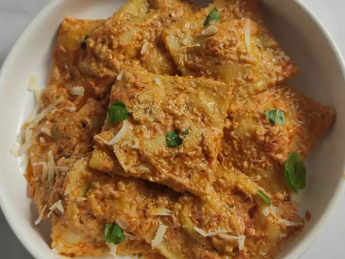

Four Cheese Ravioli

Description
This is a simple homemade ravioli recipe made by AllRecipes user Callie1025. It includes a pesto-Alfredo sauce and a marinara sauce.
Ingredients
- 2 cups all-purpose flour
- 4 large eggs
- olive oil
- salt
- 0.5 cup whole milk ricotta
- 0.25 cup shredded mozzarella
- 0.25 cup shredded provolone cheese
- 3 tbsp. grated parmesan
- dried parsley
- black pepper
- 2 cloves garlic
- 3 tbsp. basil pesto
- 1 cup heavy whipping cream
- 1 1/3 cups marinara sauce
Steps
- To prepare the ravioli dough: Mound flour on a work surface and form a well in the center. Add eggs, olive oil, and salt to the well and beat together with a fork.
- Using a fork or your fingers, gradually mix egg mixture into flour, working from the center out and using your other hand to keep the flour mound steady until a thick paste forms. Using your hands, press in remaining flour until a shaggy dough forms.
- Knead dough until smooth and elastic, 8 to 10 minutes. (Dough should have consistency of modeling clay and bounce back when poked). Wrap dough in plastic wrap and let stand at room temperature for at least 30 minutes or up to 2 hours.
- While the dough is resting, prepare the ravioli filling: Stir ricotta cheese, mozzarella cheese, provolone cheese, parmesan, egg, parsley, salt, and pepper until well combined. Set the filling aside.
- Divide dough into 4 even portions; wrap each portion in plastic wrap. Working with one portion at a time, flatten dough to about 1/3½-inch thickness. Roll the dough through a pasta machine at the widest setting. Fold the dough in thirds (like a letter), then run it through the machine at the same setting, folded edge first. Repeat the folding and rolling once more. Continue rolling the pasta twice through each consecutively smaller setting until dough is thin enough for you to see the outline of your hand through it.
- Cut dough sheet in half crosswise. On one half of the dough sheet, drop teaspoonfuls of ravioli filling 1-inch apart. Using your fingertip or a pastry brush, lightly brush dough with water around filling.
- Place second half of the dough sheet over the top and use your fingers to press around each portion of filling to press out any air and make the seal as airtight as possible.
- Using a sharp knife or pizza wheel, cut between the mounds to form squares (about 2- to 2 ½-inches each). Transfer ravioli to a baking sheet lightly dusted with flour. Repeat rolling and shaping process with remaining 3 dough portions.
- To prepare the sauce: Heat olive oil in a large skillet over medium heat. Stir in garlic and pesto sauce and cook, stirring constantly, until fragrant, about 1 minute. Stir in heavy cream; increase the heat to medium-high and bring to a boil. Reduce the heat to medium-low and simmer until slightly thickened, 3 to 5 minutes. Whisk in Parmesan cheese until melted. Remove from the heat and keep warm.
- Meanwhile, warm marinara sauce in a small saucepan over medium-low, stirring occasionally, until heated through, about 5 minutes.
- Bring a large pot of salted water to a rolling boil over high heat. Working in batches, add ravioli and return to a boil. Cook uncovered, stirring occasionally, until the ravioli float to the top and the filling is hot, 4 to 6 minutes. Drain well.
- To serve, divide ravioli between four warmed serving bowls. Drizzle marinara sauce on top, followed by cream sauce.
Home